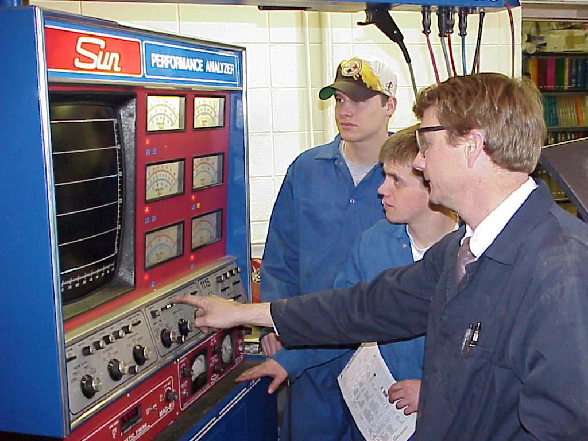

Auto 235 Engine Performance 
Instructor: Troy Spratling Winter 2001
Lecture: 8:00 - 9:50 am MWF
Lab: MWF 10:00 - 11:50 OR 3:00 - 4:50 pm
Materials: Basic set of Mechanics Tools, DVOM /Multi-meter (a must) and a desire to WORK.
Course Objective/Description: This course is intended to give you a working knowledge of engine condition testing, basic electricity (review), fuel systems, ignition systems, emission controls, and an introduction to computerized engine controls. Theory, diagnosis and repair procedures will be emphasized. In the laboratory, the student will work on various systems to enhance his/her learning of the operation of the system being repaired. Laboratory work will be performed on customer vehicles. This will give students an opportunity for real life experiences which will heighten their learning and teach positive customer relations.
Honor Code: One of the major goals of Ricks College is that of providing quality educational opportunities in a rich spiritual environment. To obtain this desired level of spiritual influence, students are asked to observe all points of the Honor Code including dress and grooming standards. We encourage our students to be modest in their attire and neat and clean in their personal appearance.
Outline:
I. Intro to Performance & Driveability
: V. Fuel & Fuel SystemsII. Electricity & Computer Fundamentals: VI. Emissions & Emission Controls
III. Engine Condition Tests & Vehicle Maintenance: VII. Diagnostics & Troubleshooting
IV. Ignition
Systems VIII. Automotive Careers & Certification
Grading:
Grading the 44 days of this course will be awarded in the following way.
1.
Attendance
15%
0-2
absences
Full 15% awarded
3-4
absences
8% awarded
5-6
absences
1% awarded
2.
Theory
25%
Quizzes
Textbook assignments
Magazine articles/reports
3. Lab
Work
40%
Engine performance lab projects
Work Orders kept in order, customer relations
Clean-up
Attitude and willingness to work !
4. Final
Exam
20%
Exam = both a written and "hands-on"
Notebook: notes, handouts, organization, etc
Final shop clean-up
=====
100 %
* Magazine Articles: You are to find FIVE articles from trade magazines and write a one page summary for each article. Also include the reference at the bottom of the summary. All three articles must be related to engine performance technology.
Policies:
1. All written work is to be turned in on time for full credit. On
time is when you arrive to class. If it is
10 min. or two days late, it is worth
half credit. Also, if any assignment is more than seven days late
no credit will be
awarded.
2. A Work Release/Work Order form will be filled out for EVERY
customer vehicle that is worked on.
Each project needs to have instructor's approval.
3. Students will have TOOLS each day ready to go to work.
4. Coveralls are necessary EVERY day... Please no SHORTS, Sandals, etc. !!
5. SAFETY GLASSES are to be worn whenever grinding, drilling, using air tools, etc
6. Respect each others tools never just borrow, ASK the owner.
7. Driving in the court yard is 5 MPH ! Offenders will be turned in to campus security.
8. Students are to CONDUCT themselves in a manner which benefit everyone's
safety
9. Friends, not allowed in shop. Say Hi, have a quick visit and then good bye
then finish your project.
COURSE DISCLAIMER AND PROCEDURES
This syllabus represents a tentative outline and schedule for this class. The instructor reserves the right to make changes, deletions, corrections, or additions during the course. It is the responsibility of the student to be aware of these changes.
It is the student’s responsibility to disclose to the teacher any special needs and/or learning disabilities he/she may have before the first week of class is over.